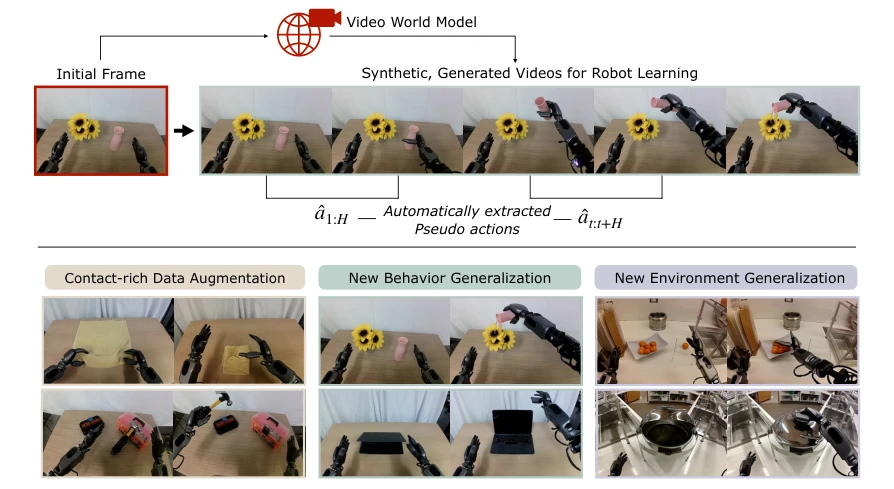
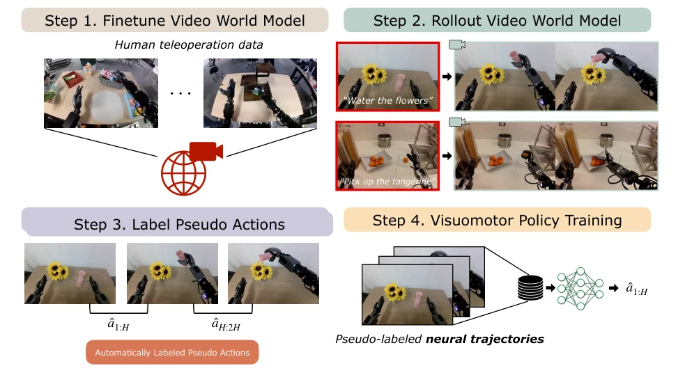
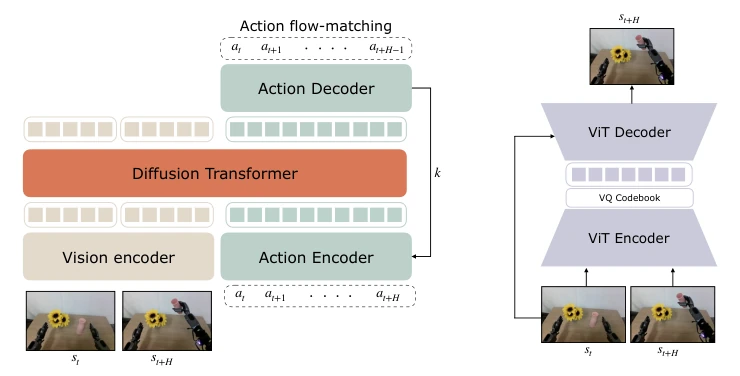
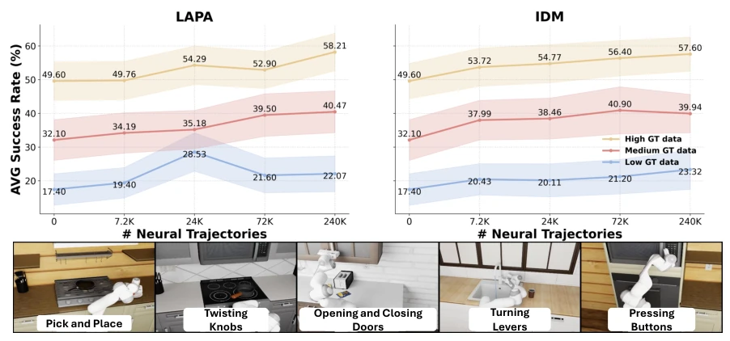
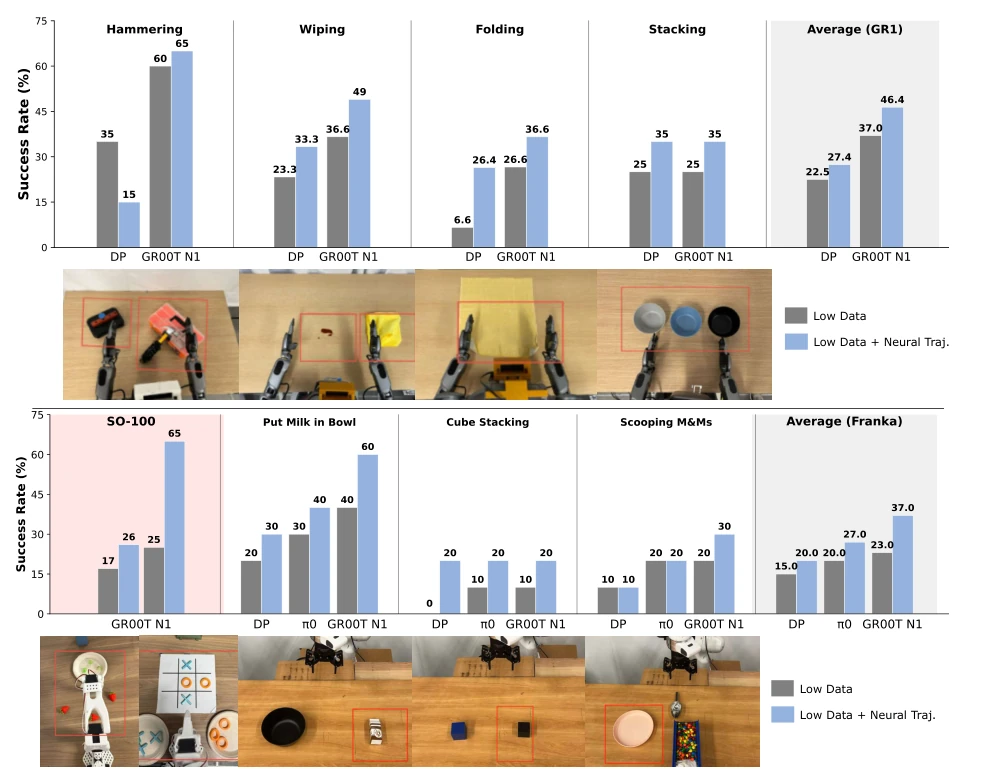
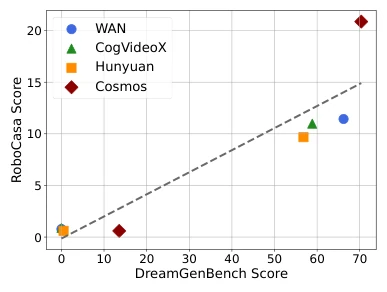
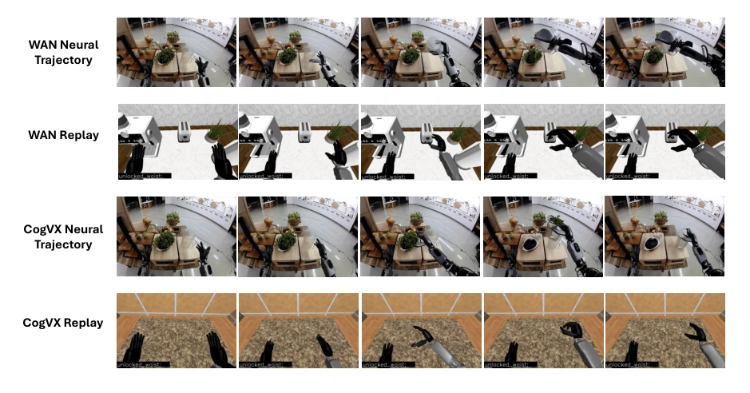
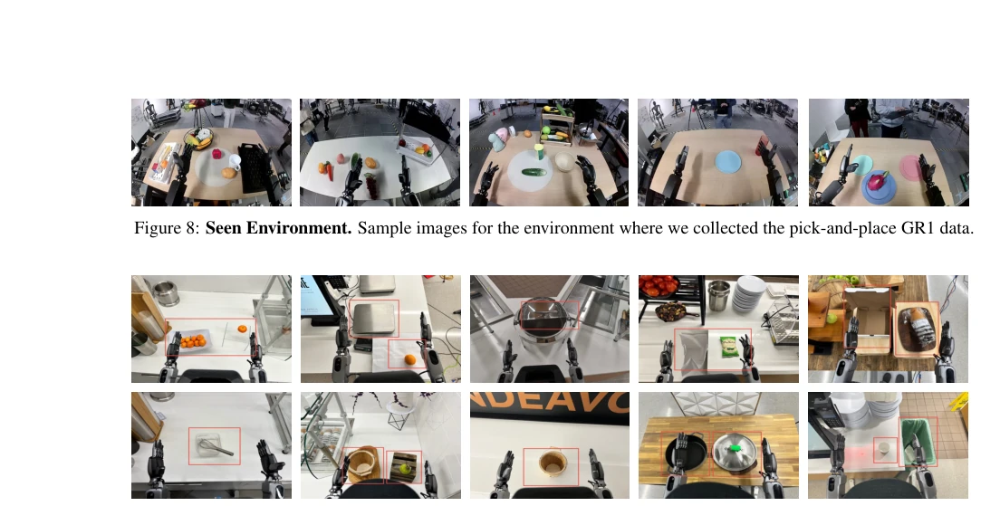
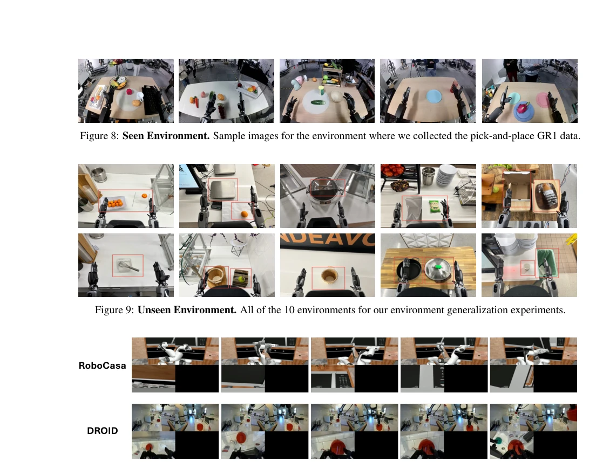
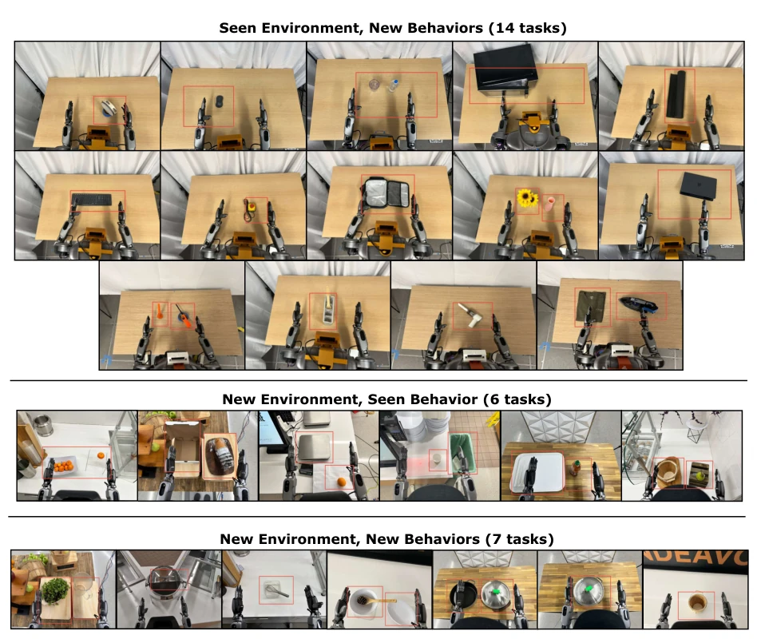

This paper enables robots to "dream", using video world models to generate synthetic data to train policies, the idea is very sexy. DreamGen generates videos by fine-tuning video models, then uses IDM to reverse-engineer actions, and finally trains the policy. The GR1 humanoid robot only learned "pick and place" yet can perform 22 new tasks, and can go to new environments, the effect is indeed stunning. But don't get too excited too soon, this thing burns compute heavily, RoboCasa dataset generation took 54 hours on 1500 L40 cards. Moreover, manual initial frames are required, the degree of automation is actually not fully in place. The so-called "neural trajectories" quality depends on the world model; if the model's physical laws collapse, the policy is also ruined. However, the DreamGen Bench benchmark is a good diagnostic tool, saving the need to test with real robots every time. Overall, this is a new path, but still far from "low-cost, fully automatic", more like an expensive data augmenter, rather than an ultimate solution. It proves video world models can serve as data generators, but computational cost remains a stumbling block.
The biggest pain point in robot learning is data. Existing methods rely on large-scale human teleoperation data [1], but collection cost is high and labor-intensive. Simulation data is cheap, but there is a sim2real gap, and it is difficult to simulate complex physical interactions such as liquids, flexible objects [30, 36]. Although existing work utilizes video generation models for assistance [45, 46], most are limited to simulation or only used for visual robustness enhancement, lacking precise modeling of physical dynamics. DreamGen aims to resolve this contradiction: leveraging the strong priors of Video World Models to generate realistic synthetic videos, bypassing expensive real-robot data collection, while unlocking behavior and environment generalization capabilities. It attempts to prove that as long as the world model is strong enough, it can "imagine" infinite training samples from a small amount of real data, achieving zero-shot or low-shot generalization. Especially for new behaviors and new environments, baseline models often fail, while this method achieves a breakthrough from 0% to 28.5%, demonstrating huge potential.

Figure 1: Generalization through DREAMGEN. We enable 2D visuomotor robot policies to generalize to new environments with new behaviors, while only collecting teleoperation data for a single behavior type (pick&place) in a single environment by utilizing video world models as synthetic data generators.
DreamGen is a four-stage pipeline. The first step fine-tunes the video world model (e.g., WAN2.1 [9]), using LoRA to adapt to specific robot kinematics, ensuring generated videos comply with physical constraints. The second step is Rollout; given initial frames and language instructions, generate a large number of robot operation videos, covering familiar behaviors and unseen environments. The third step is key; videos have no action labels, the paper proposes using an Inverse Dynamics Model (IDM) or Latent Action Model (LAPA [13]) to extract pseudo-actions (Pseudo Actions), forming "neural trajectories". IDM is based on Diffusion Transformer to predict action blocks, using sliding window to predict H-step actions, while LAPA captures frame-to-frame visual delta. The fourth step trains visual-motor policies (e.g., GR00T N1 [5], Diffusion Policy [24]), which can be co-trained with real data, or trained using only neural trajectories. Policy input state is set to zero, because neural trajectories do not contain state information. This decoupled design allows SOTA video models to function independently, without real-time coupling with the policy, and supports multiple policy architectures.

Figure 2: DREAMGEN Overview. We begin by fine-tuning a video world model on teleoperated robot trajectories. Given an initial frame and a language instruction, the model generates video rollouts depicting the intended behavior. As these videos lack action annotations, we infer pseudo-actions using either a latent action model or an inverse dynamics model, forming what we call neural trajectories. Finally, we train visuomotor robot policies on these neural trajectories.

Figure 3: Extracting Pseudo Actions. (a) shows the architecture of our IDM model and (b) shows the architecture of our latent action model.
Experiments are divided into three parts. First is data augmentation; in RoboCasa simulation, increasing neural trajectory count brings logarithmic-level improvement in policy performance, expanding data up to 333 times. Real robot experiments verified on GR1, Franka, SO-100; using only 10-13 real trajectories, combined with neural trajectories for co-training, success rate significantly improved (e.g., GR1 from 37% to 46.4%). Second is generalization capability; GR1 only learned pick-and-place, yet can learn 22 new behaviors like pouring water, opening microwave via DreamGen, and achieve 28.5% success rate in 10 new environments, while baseline GR00T N1 is 0%. Finally proposes DreamGen Bench, evaluating video model performance on instruction following and physical consistency; results show benchmark score is positively correlated with downstream policy success rate. Ablation studies show IDM actions are superior to latent actions, and zero state input does not affect performance.

Figure 4: Scaling # of Neural Trajectories in RoboCasa. We vary the sizes of neural trajectories (x-axis) and ground-truth trajectories (low, mid, high) and report results with both latent and IDM actions as pseudo action labels. We report the average success rate (%) across 24 tasks. The results at x = 0 correspond to the baseline only trained on ground-truth videos.

Figure 5: Real-world Robot Evaluation Results. The red rectangular box shows the range of object randomization during training and evaluation. Low Data denotes training 10% of available training data (only 10 trajectories per task except for GR1-folding, where we used 25 trajectories), and Low Data + Neural Traj. denotes co-training with neural trajectories.

Figure 6: Performance correlation between DreamGen Bench and RoboCasa.
其他图片Other Figures

Figure 7: Neural Trajectories and Replay Videos for WAN and CogVideoX model. The language instruction is to “Use the right hand to pick up the plastic pitcher and pour water onto the green plant.”

Figure 9: Unseen Environment. All of the 10 environments for our environment generalization experiments.

Figure 10: Multiview Examples. The top row shows a trajectory from RoboCasa and the bottom shows a trajectory from the DRIOD dataset.

Figure 11: Evaluations for all Real-world GR1 Experiments. The rectangular box represents the region where we randomize the target object during evaluation.